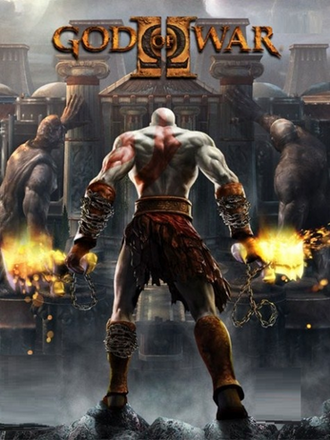
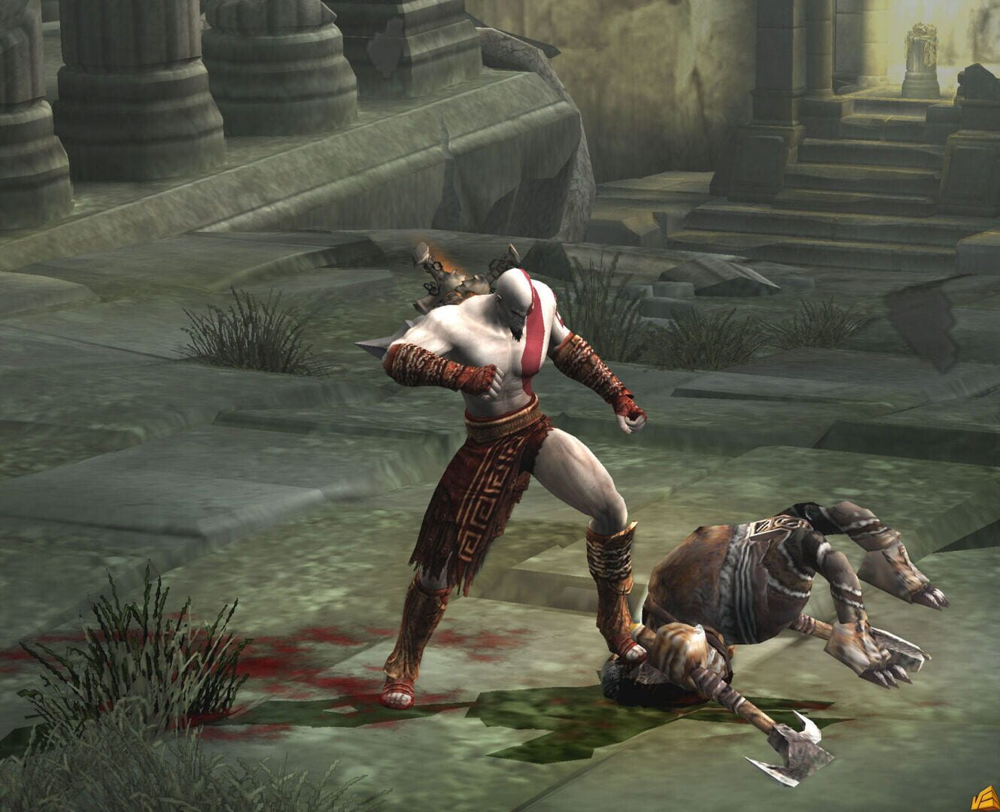
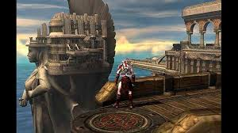
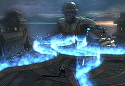

God of War 2

📅 Data de Lançamento
13 de Março de 2007
🏢 Desenvolvedora
Santa Monica Studio
📖 Sinopse
Em God of War II (2007), Kratos, o novo Deus da Guerra após derrotar Ares e traído por Zeus, que o mata temendo seu poder. Salvo pela titã Gaia, Kratos busca vingança e viaja no tempo com a ajuda das Irmãs do Destino para impedir sua morte e liderar os Titãs em uma guerra final contra o Olimpo.
🖼️ Galeria de Imagens




⬅ Voltar